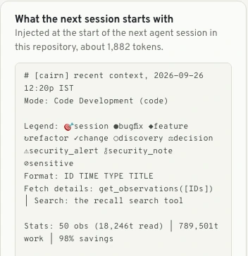
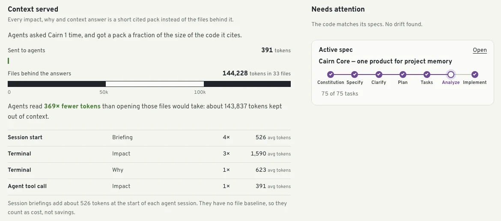
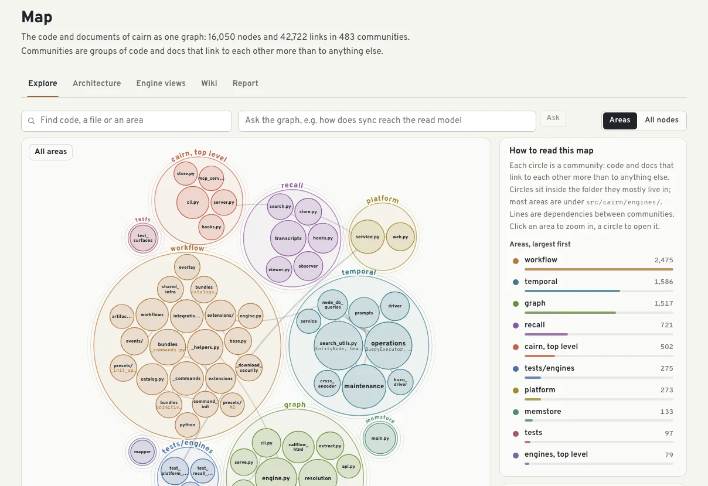

The problem
Every session starts back at the trailhead.
Coding agents are capable, but they forget everything between sessions. Each new one pays again, in time and tokens, to rediscover what the last one already knew.
- It re-reads the same files to rebuild a picture of the code that an earlier session already had.
- It misses the caller three hops away, because nothing told it that caller exists.
- It re-applies the change that was reverted last spring, because the revert only lives in git history.
- It never hears about the convention the team agreed on in review.
Cairn keeps that context for them, and every commit, spec and session adds to it.
The name is literal. A cairn is a stack of stones that marks a route across ground with no path, left by the people who passed before for whoever comes next.
What it keeps
Five engines, one question each.
Everything syncs into .cairn/ inside the repository. Git hooks re-sync in the background after each commit, merge, checkout and rewrite, so a commit never waits on Cairn and the layers keep building without anyone tending them.
-
Map
What is the code?
Tree-sitter syntax trees for 25 languages, plus docs, schemas and the rationale comments people leave next to code, linked into one graph and grouped into communities.
Ask it with
cairn_impactcairn trace path|explain|querycairn hubs- 16,050nodes
- 42,722links
- 483communities
Cairn’s own repository, mapped by Cairn.
-
Specs
What did we intend?
A spec-driven workflow in which every task is traced to the files it touched, so intent and code can be checked against each other.
Ask it with
cairn_specscairn drift- constitution
- specify
- plan
- tasks traced to files
cairn driftlists done tasks whose files are missing, requirements no task covers, and code that changed after its task was closed. -
Timeline
What happened, and when was it true?
Git history, agent sessions and drift, stored as facts with validity windows, so the record keeps what was true then alongside what is true now.
Ask it with
cairn why <file|symbol>cairn_whycairn whyreturns- The rationale comments in the code
- The commits behind the lines
- The requirement and task that produced it
- Decisions recorded about it
-
Memory
What did we learn?
Conventions, decisions and gotchas, from people and from agents. An agent that learns something durable stores it as one sentence with a kind, and the next agent gets it with the code it applies to.
Ask it with
cairn_remembercairn_whySeeded on the first run from
- Accepted ADRs
- Answered clarifications in specs
- Rules in contributing and style docs
- Reverted or explained fixes in git history
-
Sessions
What did agents do?
Prompts, files read and changed, and commands, captured as agents work and turned into observations and session summaries. On for Claude Code by default; other agents take one command.
cairn sessions integrate install <agent>Re-reading the raw activity18,021,158 tokensObservations and summaries259,207 tokens454 rows of captured activity in this repository. Recalling instead of rediscovering keeps 17,761,951 tokens out of future sessions.
How an agent finds it
The agent doesn’t have to remember to ask.
The first cairn run (or cairn init) makes three small, readable changes for each agent it detects. Nothing is hidden, and cairn uninstall removes all of it.
-
1Registers one MCP server
An entry named
cairngoes into each agent’s own config:.mcp.jsonfor Claude Code,.cursor/mcp.jsonfor Cursor,.gemini/settings.jsonfor Gemini CLI, andcodex mcp addfor Codex.By default the server advertises a core set of tools: about 1,600 tokens per turn, against about 8,600 for the full set.
.mcp.json{ "mcpServers": { "cairn": { "command": "cairn", "args": ["mcp"] } } } -
2Writes a short block into CLAUDE.md or AGENTS.md
Three habits in plain language: call
cairn_impactbefore editing,cairn_whybefore guessing, andcairn_rememberwhen you learn something durable. This is the block from Cairn’s own repository, verbatim.CLAUDE.md## Cairn — project memory This repository is connected to Cairn (MCP server `cairn`), the project's memory of code structure, specs, history, decisions and past agent work. - **Before editing**, call `cairn_context` with your task (or `cairn_impact` for a specific file or symbol). It returns dependents, files that usually change together, past fixes and reverts, the owning spec task, team conventions and recent agent sessions, within a small token budget. - **When asked why code is the way it is**, call `cairn_why` before guessing. - **When you learn something durable** (a convention, decision, gotcha), call `cairn_remember` with a one-sentence statement and a kind. Don't store what the code already says. - Treat `[EXTRACTED]` evidence as fact and `[INFERRED]` as a lead to verify. - Spec work lives in `specs/`; Cairn hooks run automatically at plan, tasks and implement stages. -
3Installs a session-start hook
Instructions can be ignored; a hook can’t. When a session starts,
cairn hook session-startinjects a brief before the agent sees your first prompt. Each agent gets the closest equivalent it supports:- Claude Code
- Two
SessionStarthooks: the brief, and a timeline of recent observations and session summaries - Gemini CLI
- A
SessionStarthook in.gemini/settings.json, returned as additional context - Codex
- A
SessionStarthook in.codex/hooks.json; approve it once in/hooks - Cursor
- A
sessionStarthook in.cursor/hooks.json, also undercursor-agent -p

What the next session in this repository starts with: about 1,882 tokens, injected without the agent asking.
What that costs the context window
One impact answer for one file
369× fewer tokens than opening those files.
Tool list advertised every turn
80% less for the agent to read before it does anything.

Works with Claude Code, Codex, Cursor, Gemini CLI, OpenCode, Copilot CLI, VS Code with Copilot and Antigravity. Details per agent are in docs/agents.md.
For people, too
One page: cairn ui
The same memory, browsable: the map, specs, timeline, memory and sessions, with one search box across all of them. In local mode there is no sign-in and nothing leaves the machine.

Install
Install once, then run cairn in any repository.
$ uv tool install cairn-brain # or: pipx install cairn-brain
$ cd your-repo
$ cairnYou need Python 3.11 or newer and git. The first sync downloads a small local embedding model (about 70 MB) once. Without network access, Cairn uses a built-in hashing embedder instead, so search still works, only less semantically.
Nothing on day one needs a model. When one is available, such as a signed-in Claude Code CLI, Cairn finds it on its own and uses it for session observations, summaries and written answers.
The first run sets the repository up without asking questions:
- Adds the spec workflow:
.cairn/workflow/and the/cairn.*agent commands. - Wires every agent it detects to the
cairnMCP server and adds a Cairn block toAGENTS.md. Claude Code also gets session capture hooks, a session-start briefing, a status line,/cairn:*commands, four sub-agents and the session skills. - Installs git hooks (post-commit, post-merge, post-checkout, post-rewrite) that re-sync in the background.
- Runs the first sync, starts the local server and prints the page’s address.
After that, cairn shows status. Setup is idempotent, and cairn uninstall removes what it added.